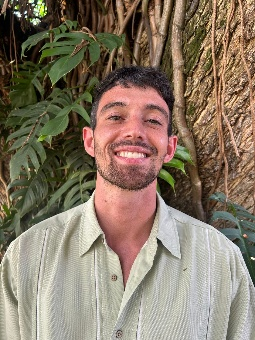
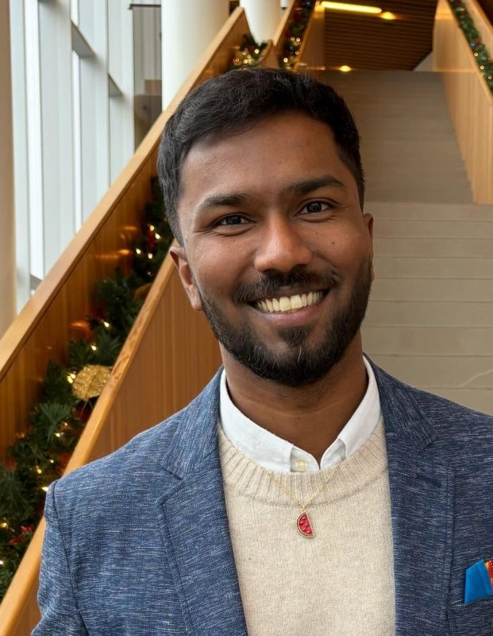
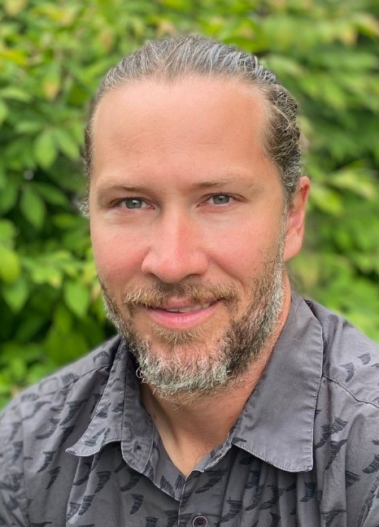

Our Mission
InSight Biodiversity is a BC-based team, currently focused on translating the Savimbo Indicator Species Biodiversity Methodology (ISBM) into locally credible, Indigenous-governed pilot projects with First Nations and Indigenous Communities in British Columbia.
We are not affiliated with Savimbo financially or organizationally. Our role is to adapt and test ISBM approaches under Indigenous governance in BC, share learning back into national and global nature finance conversations, and reduce the technical burden and risk for implementing communities. We act as capacity multipliers, not gatekeepers.
Our Structure
InSight Biodiversity is being structured to reflect our values — not just describe them. Whether as a Benefit Company or non-profit society, our guiding principle is the same: socio-ecological priorities come first. Environmental conservation, Indigenous governance, FPIC, and data sovereignty are not add-ons to our business model, they are the business model. We are currently finalizing the legal structure that best enables us to operate on those terms.
All work proceeds only with Free, Prior and Informed Consent. Decision-making authority rests with Nations at every stage.
Biodiversity data, photos, and cultural information remain under Nation control. We co-design governance protocols with each partner community.
We are interested in building field-wide capacity rather than competitive advantage. All frameworks, templates, and tools are freely shared with other Nations and allied organizations.
The Team

Co-Founder — Restoration & Land Systems
British-born Canadian with experience conducting salmon habitat restoration with Indigenous Groups in B.C, as well as restoring degraded ecosystems with local communities in Latin America. Holds qualifications pertaining to carbon accounting and MRV, and currently works with the Alliance of Bioversity–CIAT on improving national land-use change emissions reporting for Latin American countries. A Master of International Forestry graduate, with an authentic appreciation for the natural environment and a firm willingness to support and progress its preservation.
connor@insightbiodiversity.ca
Co-Founder — Climate Finance & Systems Change
Vivekan is a Sri Lankan-born Tamil Canadian raised with ancestral and cultural knowledge and practices intertwined with the lands that house and nurture us, and all life. He comes to this line of work with a background in designing, implementing, and measuring systems-change programs for poverty reduction, inclusive economics, and nature-positive agri-food and land use systems across Africa and Asia. Now a Masters of International Forestry graduate, his commitments are steadfast towards strengthening sovereignty (land, food, and beyond), land stewardship, and exploring new... all in pursuit of advancing regenerative, just, and inclusive economic systems.
vivekan@insightbiodiversity.ca
Co-Founder — Community Engagement & MEL
Jake came to conservation finance by way of small business ownership in Canada and more than a decade living in Taiwan and Austria. His Master of International Forestry at UBC included research on emerging voluntary biodiversity credit markets, drawing on carbon market lessons to understand what high-integrity looks like in practice. This, combined with time at the Global Landscapes Forum in Kenya supporting better designed impact reporting systems for grassroots restoration organizations directly informs how InSight approaches everything, from project co-design, community engagement, monitoring and data governance in its BC pilots.
jake@insightbiodiversity.ca